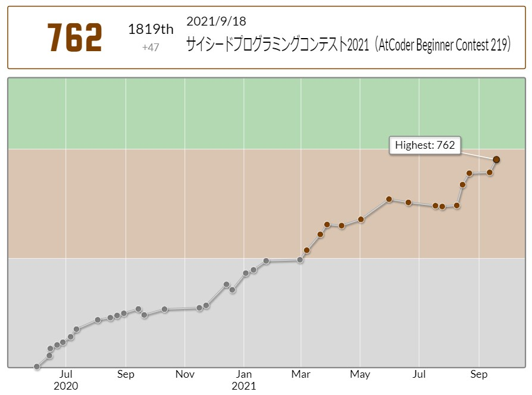
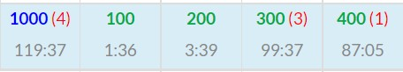
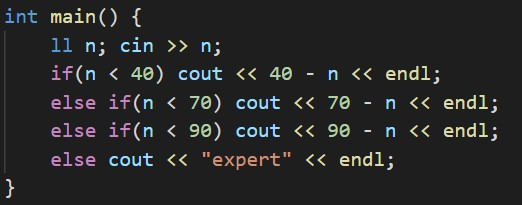
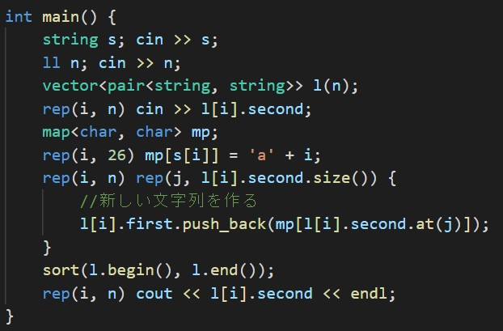
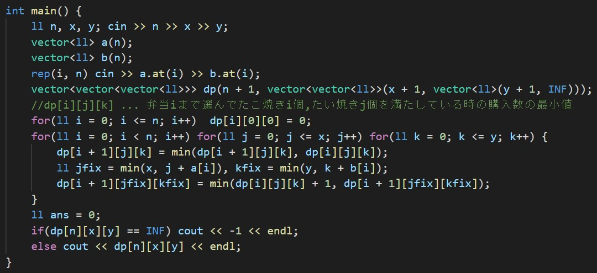

ABC219でした。ここ最近調子が良いのですが、先週のABCから情報オリンピックの過去問以外全く問題をといていなかったので少しレートが落ちそうで怖かったです。
結果は99分4AC4ペナでした。まじで危なかった...
Cがわけわからなすぎていったん飛ばしてD問題を解けたのが終了13分前だったので、もうちょっと時間が少なかったら2完だったかもしれないと思うとまじでホラー映画級に怖いです。
A - AtCoder Quiz 2
条件分岐で解きます。
B - Maritozzo
s1, s2, s3をまとめて1つの配列に入れて扱います。
Tを数値として受け取って% 10と/ 10を繰り返していく方法もありますが、僕は文字列として扱う書き方の方をよく使う気がします。
C - Neo-lexicographic Ordering
この問題は大きく分けて2つの解法があると思います。
1つは自分で比較関数を実装してそれをもとにsortして出力する解法、もう1つは文字列Xを元に新しい文字列の配列を作り、それを元にsortしていくという解法です。
僕は後者の方を選びました。
vector<pair<string, string>>の各要素について、second要素に元の文字列、first要素に新しい文字列を作り、sortしてを出力するというのが大まかな流れです。
新しい文字列を作る方法は以下の通りです。
mapあたりで古いアルファベットのk番目と新しいアルファベットのk番目(1 <= k <= 26)を対応させたものを予め保存しておく
↓
新しい文字列.push_back(map[古い文字列のi番目])という操作を全ての要素について行う。
ここで1つ注意が必要で、まあ僕みたいなアンポンタン以外大丈夫だと思うんですけど、文字の対応は
map[元のk番目の文字] = map[新しいk番目の文字]
であって、決して
map[新しいk番目の文字] = map[元のk番目の文字]
じゃないですからね。(ここ間違えてずっと悩んでいたなんて言えない)
計算量はO(N * max|Si|)(新しい文字列を作る操作)とO(NlogN)(ソート)で、O(NlogN)になると思います。
ここで3WAを出してACになったのが終了23秒前でした。草。
D - Strange Lunchbox
問題を見てかなり早い段階で、ナップサックDPジャン！！！と気づけたのですが、実装にめちゃくちゃ時間がかかってしまいました。
この問題のキモは3次元DPであることと、たこ焼き・たい焼きがX個・Y個を超えている時も条件を満たすという所です。
3次元DPは扱いに気を付ければ大丈夫です。問題なのは後者で、所謂ナップサック問題の解法から少しひねらないとダメで、僕はめちゃくちゃ思いつくまで時間がかかりました。
具体的な解法は以下の通りです。
dp[i + 1][j][k] : i番目までの弁当で、ちょうどj個のたこ焼きとちょうどk個のたい焼きを手に入れるために買うお弁当の個数の最小値(初期値:INF, 答えはdp[n][x][y])
というDPを用意する。dp[*][0][0] = 0;としておく。(たこ焼き、たい焼きがどちらも0個のため弁当を買う必要がない)
漸化式は以下のとおりである。0 ~ N - 1, 0 ~ X, 0 ~ Yの3重ループで値を更新していく。
dp[i + 1][j][k] = min(dp[i + 1][j][k], dp[i][j][k]);
dp[i + 1][min(j + a[i], x)][min(k + b[i], y)] = min(dp[i][j][k] + 1, dp[i + 1][min(j + a[i], x)][min(k + b[i], y)]);
2つ目の"配るDP"の式がとても重要です。
前述の通り、たこ焼き・たい焼きがX個・Y個を超えている時も条件を満たす、つまり例えば5個のたこ焼きがほしい時に6個たこ焼きがあっても条件を満たすので、重さが制限を超えたら値を捨てる(典型的な)ナップサック問題とは違い、値を捨てることができません。(捨てるとWAになります)
ここでよく考えると、たこ焼き・たい焼きの合計がX・Y個を超えてしまった場合は超えた分だけたこ焼き・たい焼きを捨ててX・Y個にしてしまえばいいと分かります。食品ロスですね。(公式解説ではいらない分を青木君に押し付けています)
直感で少し分かりにくいかもしれませんが、5個たこ焼きが食べたい時にたこ焼き100個入りの弁当を買っても条件は満たされる、みたいな感じで考えればなんとなく分かるかもしれません。
計算量はO(NXY)です。結構ギリギリですね。
多分コンテスト中にナップサック系問題を通せたのは初めてだと思うのでめちゃくちゃ嬉しいです。実装出来たこと自体もとても嬉しいですが、短時間で「この問題はナップサックDPだ」と気づけたことが成長を感じられてヨカッタデス。
という訳でABC219でした。
次に4完ができたらおそらく入緑できるので、頑張っていきたいです。
(次だけでいいから得意なアルゴリズムばっか出てくれ...!)